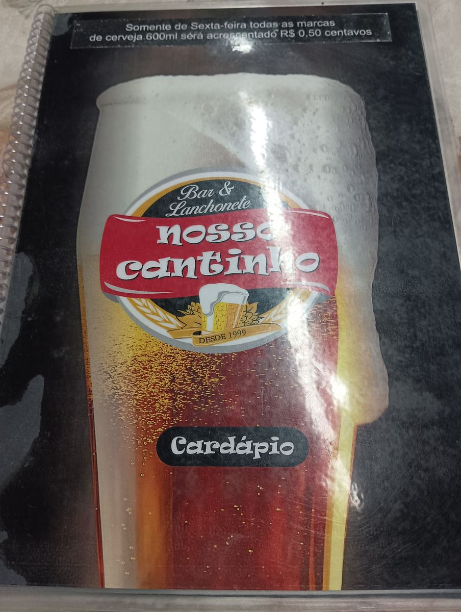
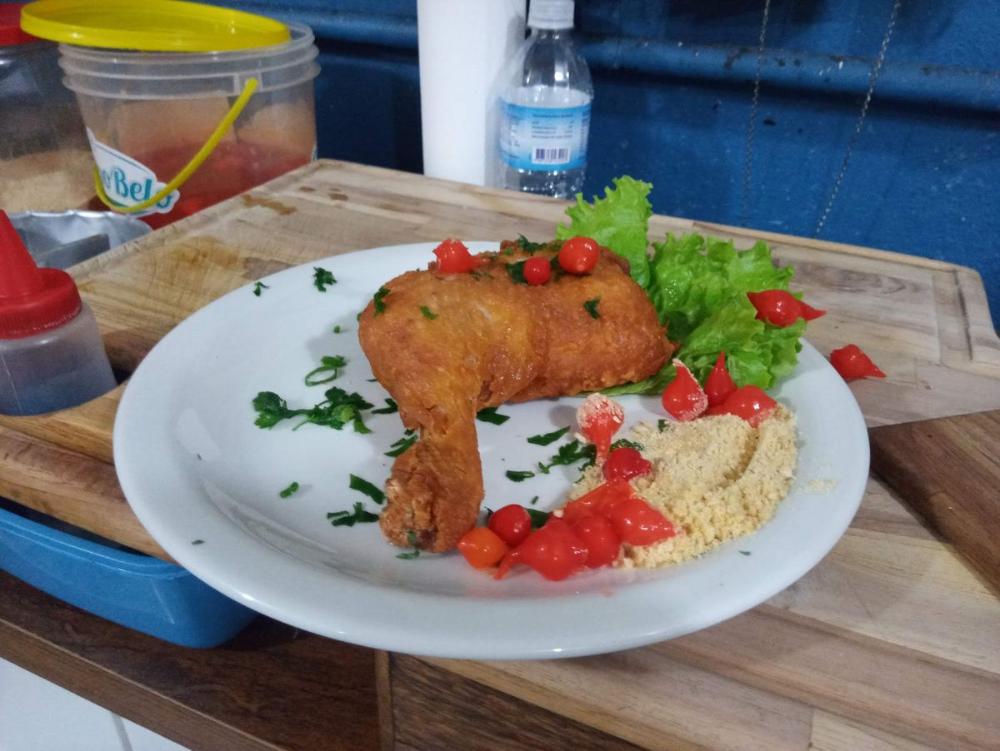
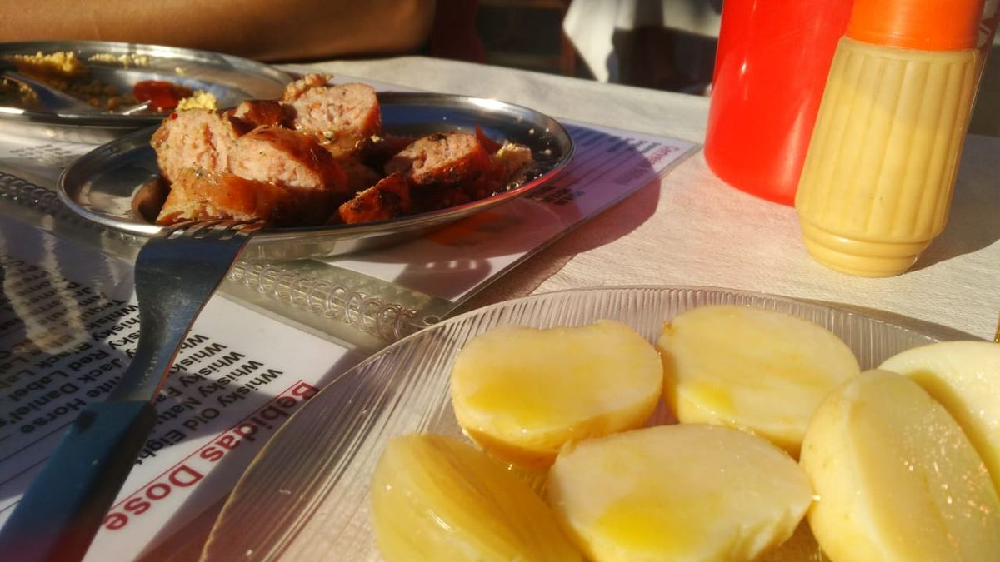

Espetinho na hora, cerveja gelada e samba de primeira.
Boteco de bairro com torresmo servido com pimenta biquinho, panceta de sexta, conservas no balcão e, no domingo, costela de boi e joelho de porco. Simples, aconchegante e com cara de casa.
Seg a sex 16h à meia-noite · sáb e dom 12h às 20h30


Cada dia tem o seu motivo
Fim de expediente
Espetinho feito na hora, porção de calabresa acebolada e a cerveja gelada que todo mundo elogia.
Dia de panceta
Panceta com farofa e pimenta biquinho, só às sextas. É também a noite mais cheia.
Almoço de boteco
No domingo tem assado, costela de boi e joelho de porco. E dá para encomendar.
Da brasa, da chapa e do balcão
Alguns itens e preços do cardápio impresso da casa.
Espetinhos
- Frango, carne ou lomboR$ 10
- Coração, tulipa ou kaftaR$ 10
- QueijoR$ 10
- Linguiça apimentadaR$ 10
- Linguiça caipiraR$ 11
- Pão de alhoR$ 7
- Bife de contra filéCebola, pimenta biquinho, farofa e pãoR$ 55
- Só carré (8 unid.)R$ 85
Porções
- Calabresa aceboladaCom vinagrete e pãoR$ 40
- Contra filéCom vinagrete e pãoR$ 55
- Frango aceboladoR$ 40
- Frango à passarinhoMeia R$ 37R$ 48
- Panceta (só sexta)Meia R$ 13R$ 25
- Batata fritaMeia R$ 15R$ 25
- MandiocaMeia R$ 15R$ 20
- Mini salgados (12 unid.)Croquete, kibe, coxinha ou bolinha de queijoR$ 28
Lanches
- X-eggR$ 18
- Contra filé com queijoR$ 23
- Contra filé, queijo e saladaR$ 25
- Filé de frango, queijo e presuntoR$ 20
- Linguiça apimentadaCom queijo meia curaR$ 25
- Linguiça caipiraCom queijo meia curaR$ 30
- Caldosconsulte
Preços copiados do cardápio impresso; podem ter mudado. No balcão ainda tem conservas, provolone, tremoço, amendoim e salgados.

Bar raiz de verdade
Samba de primeira, cerveja gelada e bons preços!Resumo das avaliações · Google
Destaque para a porção de torresmo deliciosa servida com pimenta biquinho.Resumo das avaliações · Google
Ambiente simples e aconchegante. Dá para se sentir em casa, os espetinhos são feitos na hora. Para quem gosta de bar raiz, esse é o lugar certo!Daiane · Google
Jardim Leonor
| Segunda a sexta | 16h à meia-noite |
| Sábado e domingo | 12h às 20h30 |
Rua Padre Leonel França, 181 · Jardim Leonor, Campinas (SP)
Estacionamento na rua · cartão e aproximação · fichas para o pebolim